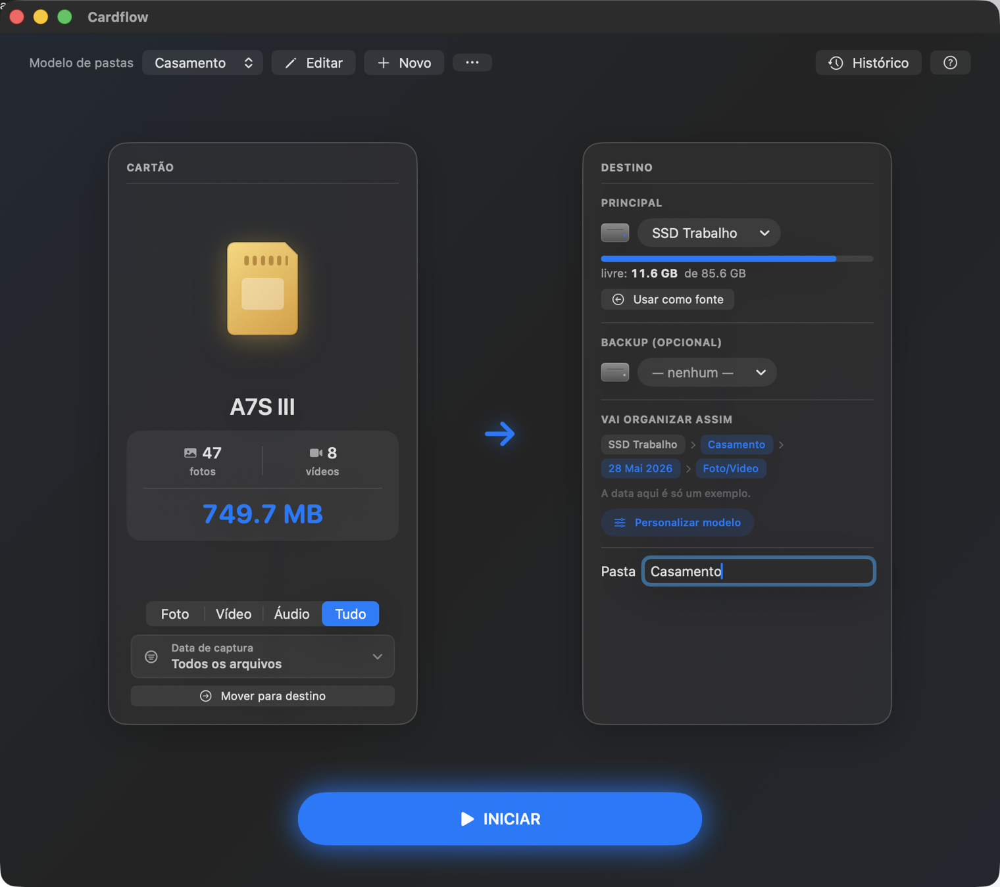

Confere arquivo por arquivo
Compara o hash da origem com o do destino. Ou bateu certinho, ou ele te avisa.
Descarrega o cartão, organiza nas suas pastas, confere cada arquivo e só dá o sinal verde quando a cópia bateu.
Baixa o DMG mais recente direto do GitHub, sem pedir cadastro.

Verificação
Ele confere o hash da origem e do destino. Se um arquivo não bateu, você fica sabendo antes de formatar.
Conferido. Seguro para formatar.Compara o hash da origem com o do destino. Ou bateu certinho, ou ele te avisa.
Cria as pastas por evento, data e tipo e renomeia os arquivos. Você desenha o modelo de pastas, ou usa o padrão.
Destino principal e backup na mesma rodada. Se o disco cair no meio, ele continua de onde parou.
RED, Blackmagic, P2 e XAVC ficam com a estrutura que o editor espera. Cada descarga gera um manifesto do que foi salvo.
App nativo e assinado, que roda offline. Seus arquivos ficam no seu Mac. A internet entra só para buscar atualização.